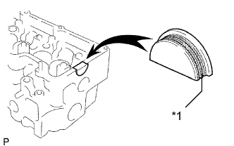
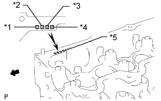
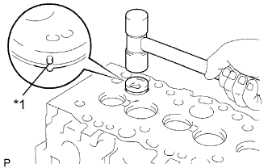
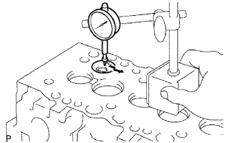
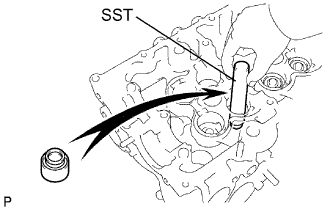
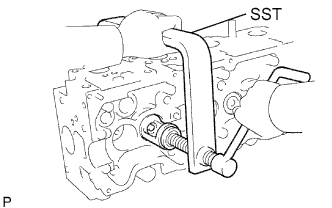
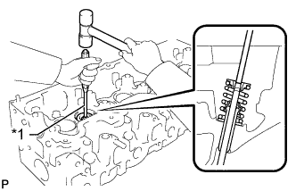
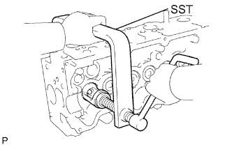
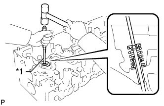

ГОЛОВКА БЛОКА ЦИЛИНДРОВ > ПОВТОРНАЯ СБОРКА |
| 1. INSTALL STUD BOLT |
| *a | Intake Manifold Side B | *b | Cylinder Head Cover Side |
| *c | Exhaust Manifold Side | - | - |
| 2. INSTALL SEMICIRCULAR PLUG |
Remove any old packing (FIPG material).
|  |
Apply seal packing to the semicircular plug as shown in the illustration.
| *1 | Seal Packing |
Install the semicircular plug to the cylinder head.
| 3. INSTALL COMBUSTION CHAMBER SUB-ASSEMBLY |
|  |
Select the number of shim, according to the table below.
| Item | Specified Condition |
| Mark 1 | 5.91 to 5.94 mm (0.2327 to 0.2338 in.) |
| Mark 2 | 5.94 to 5.97 mm (0.2338 to 0.2350 in.) |
| Mark 3 | 5.97 to 6.00 mm (0.2350 to 0.2362 in.) |
| *1 | No. 1 Combustion Chamber |
| *2 | No. 2 Combustion Chamber |
| *3 | No. 3 Combustion Chamber |
| *4 | No. 4 Combustion Chamber |
| *5 | Mark 1, 2 or 3 |
 | Front |
|  |
Align the combustion chamber knock pin with the cylinder head notch.
| *1 | Pin |
Using a plastic-faced hammer, tap in the combustion chamber.
|  |
Using a dial indicator, check the combustion chamber protrusion.
| 4. INSTALL VALVE STEM OIL SEAL |
|  |
Using SST, push in a new oil seal.
| 5. INSTALL INTAKE VALVE |
Install the valve, spring seat plate washer, valve spring and spring retainer.
|  |
Using SST, compress the valve spring and place the 2 retainer locks around the valve stem.
|  |
Using a 5 mm pin punch and plastic-faced hammer, lightly tap the valve stem tip to ensure a proper fit.
| *1 | 5 mm Pin Punch |
| 6. INSTALL EXHAUST VALVE |
Install the valve, spring seat, valve spring and spring retainer.
|  |
Using SST, compress the valve spring and place the 2 retainer locks around the valve stem.
|  |
Using a 5 mm pin punch and plastic-faced hammer, lightly tap the valve stem tip to ensure a proper fit.
| *1 | 5 mm Pin Punch |
| 7. INSTALL VALVE LIFTER |
Install the valve lifter and shim.
Check that the valve lifter rotates smoothly by hand.